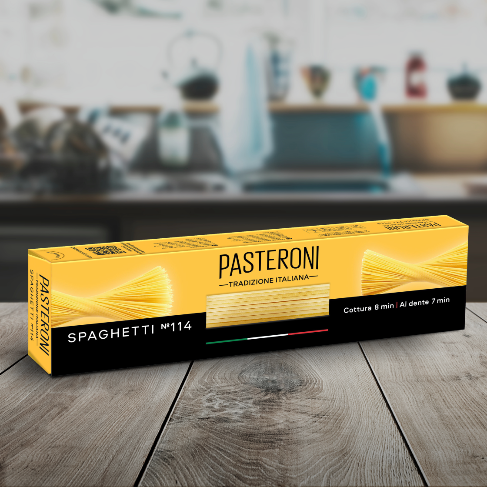
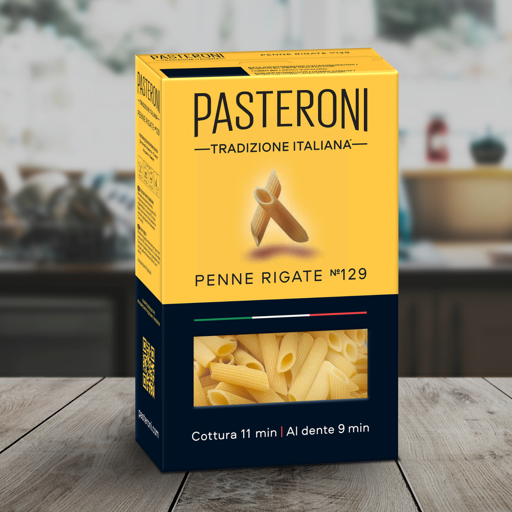
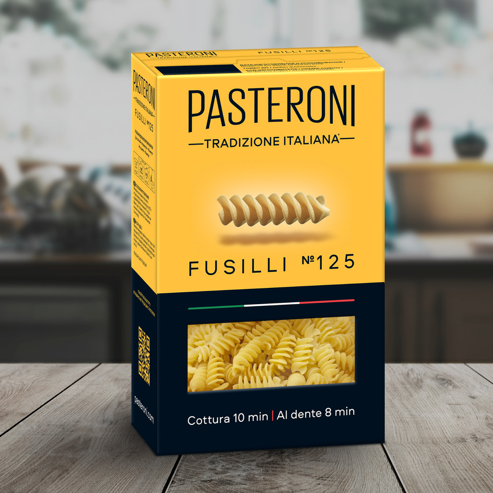
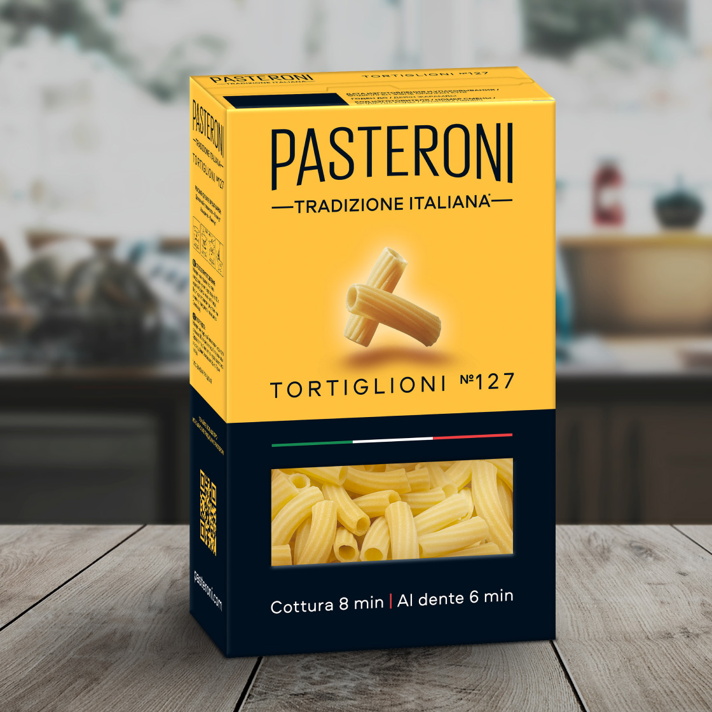
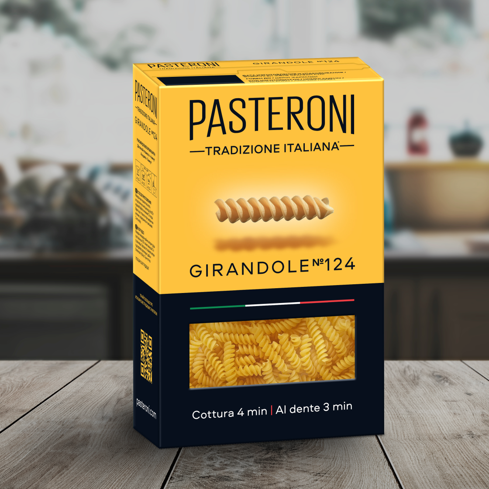
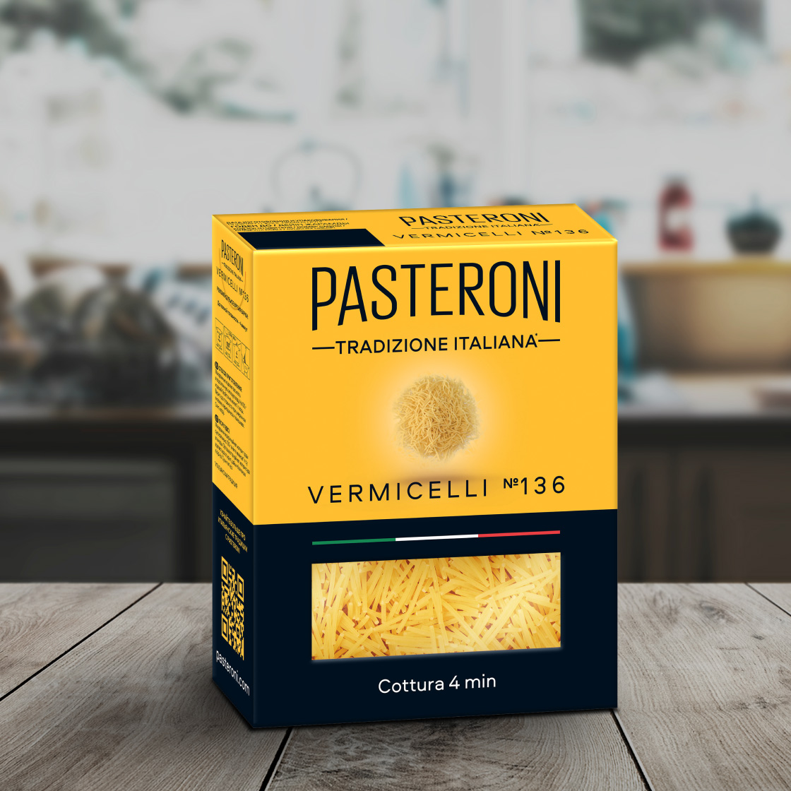

Pasteroni – паста, изготавливаемая по настоящим итальянским традициям качества. Компания использует 100% твёрдые сорта пшеницы и бронзовые матрицы при создании пасты, а также длительно сушит её при щадящих температурах. Высокое качество продукции достигается благодаря соблюдению итальянских традиций производства.
Продукция:
-

Spaghetti №114
Название этой пасты происходит от слова spago, "нить". Прежде в Неаполе согнутые пополам спагетти сушили прямо на улице, на специальных вешалках. Тогда их длина составляла минимум 50 см. Сегодняшний стандарт – 25 см.
Рекомендуемое время варки:
- До полной готовности – 8 минут
- Аль денте – 7 минут
-

Penne rigate №129
Канонический рецепт перьев – с острым соусом arrabiata, что значит «сердитый». В его составе – перец чили, чеснок, томаты и оливковое масло.
Рекомендуемое время варки:
- До полной готовности – 11 минут
- Аль денте – 9 минут
-

FUSILLI №125
Fuso переводится как "веретено". Своей формой эта паста обязана способу сушки. Свежие спагетти жители Апулии наматывали на похожую на веретено палку и оставляли сушиться на воздухе.
Рекомендуемое время варки:
- До полной готовности – 10 минут
- Аль денте – 8 минут
-

TORTIGLIONI №127
Эта паста в виде коротких трубочек имеет особый рисунок – восходящие по спирали бороздки. Ее название происходит от латинского слова tortilis, что означает "скручивать".
Регион: Пьемонт
Рекомендуемое время варки:
- До полной готовности – 8 минут
- Аль денте – 6 минут
-

GIRANDOLE №124
Джирандоле - маленькие фузилли. Название получили за схожесть с детской разноцветной вертушкой. Их хитро закрученная поверхность прекрасно удерживает большое количество сыра и густые мясные соусы.
Регион: Кампания
Рекомендуемое время варки:
- До полной готовности – 4 минуты
- Аль денте – 3 минуты
-

VERMICELLI №136
Вермишель (что в переводе значит «червячки») добавляют в легкие супы и бульоны, прежде всего овощные и рыбные.
Рекомендуемое время варки:
- До полной готовности – 4 минуты
Сохраняет форму при варке
Благодаря многочасовой сушке при щадящих температурах паста остается упругой, эластичной и невероятно вкусной!
Использование бронзовых матриц
Производство оснащено бронзовыми матрицами, как на лучших итальянских фабриках. Пористая и шероховатая поверхность пасты отлично удерживает любые соусы.
Из твёрдых сортов пшеницы
Используется мука только из твёрдых сортов, как это принято в Италии. Это позволяет сохранить витамины, минералы, белок и клетчатку, содержащиеся в зерне.